0202 - Miscellaneous topics
Some stuff to set-up the environment..
julia> cd(@__DIR__)julia> using Pkgjulia> Pkg.activate(".")Activating project at `~/work/SPMLJ/SPMLJ/buildedDoc/02_-_JULIA2_-_Scientific_programming_with_Julia`
If using a Julia version different than 1.7 please uncomment and run the following line (reproductibility guarantee will hower be lost) Pkg.resolve() Pkg.instantiate() # run this if you didn't in Segment 02.01
julia> using Randomjulia> Random.seed!(123)Random.TaskLocalRNG()
Plotting
Within the many possible packages to plot in Julia we use here the Plots package that allows at run time to choose the plot's backend. The defauld backend is gr (that, if you want to go back to it after you choosen another backend, you can activate with gr()). Other common backends are the Python MatplotLib (pyplot(), requiring package PyPlot) and Plotly (plotlyjs() from package PlotlyJS). Actually we use StatsPlots that just adds a set of convenient functionalities (in plots terminology called "recipes") on top of Plots.
julia> using StatsPlots # no need to `using Plots` as `Plots` elements are reexported by StatsPlots
The basic idea is that we can draw different "graphical elements" in a Plot figure. The plot(.) function will first create a new figure, while plot!(.) will modify an existing plot (by drawing new elements on it, such as a new serie) taking the "current" plot as default if no plot object is passed as first argument.
Plotting functions
Let's start plotting a function. The FIRST TIME you invoke plot will take a while. This is the famous "time to first plot" problem due to the JIT compilation, but it refer only to the first plotting in a working session
julia> plot(cos) # default [-5,+5] rangePlot{Plots.GRBackend() n=1}
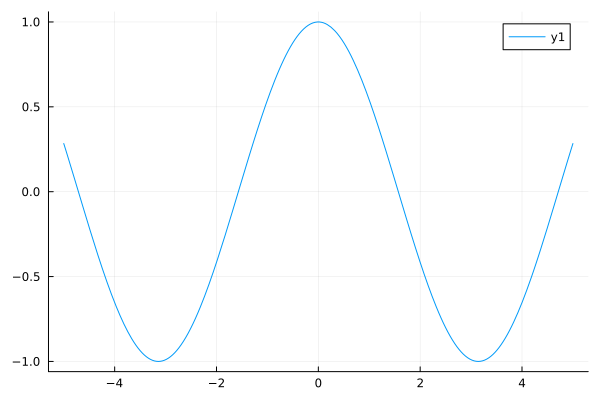
julia> plot!(x->x^2, -2,2 ) # more explicit, with rangesPlot{Plots.GRBackend() n=2}
julia> plot!(x->max(x,2), label="max function", linestyle=:dot, color=:black, title="Chart title", xlabel= "X axis", ylabel="Y axis", legend=:topleft) # a bit of designPlot{Plots.GRBackend() n=3}
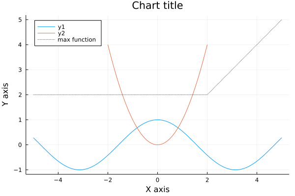
julia> plot!(twinx(),x->20x,colour=RGB(20/255,120/255,13/255)) # secondary axisPlot{Plots.GRBackend() n=4}
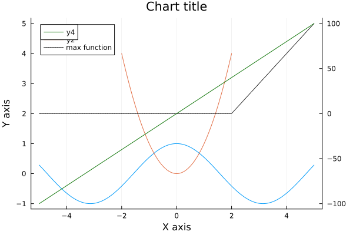
Plotting data
julia> using DataFramesjulia> x = 11:1511:15julia> data = DataFrame(a=[4,8,6,6,3], b=[2,4,5,8,6], c=[20,40,15,5,30])5×3 DataFrame Row │ a b c │ Int64 Int64 Int64 ─────┼───────────────────── 1 │ 4 2 20 2 │ 8 4 40 3 │ 6 5 15 4 │ 6 8 5 5 │ 3 6 30julia> plot(x, Matrix(data)) # x, series (in column)Plot{Plots.GRBackend() n=3}
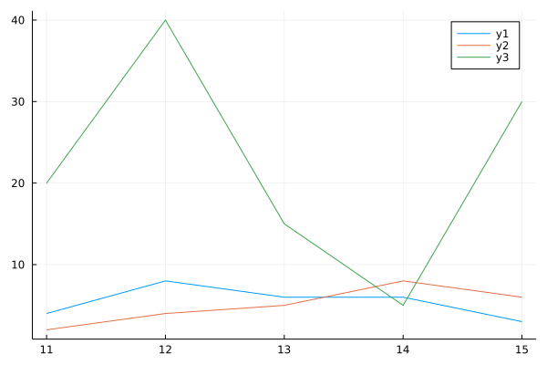
julia> @df data plot(x, :a, seriestype=:bar, legend=:topleft)Plot{Plots.GRBackend() n=1}
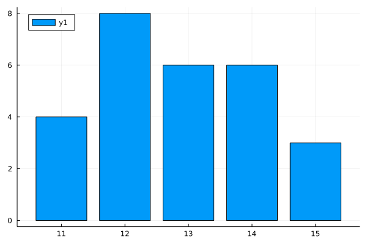
julia> plot!(x, data.b, seriestype=:line)Plot{Plots.GRBackend() n=2}
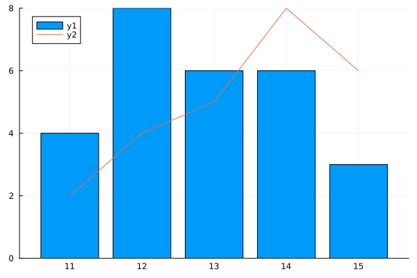
julia> scatter!(twinx(), x, data.c) # alias for `plot!(..., seriestype=:scatter)`Plot{Plots.GRBackend() n=3}
Layouts with multiple plots
julia> l = @layout [a ; b c] # a,b,c, here are just placeholders, not related with the df column names..2×1 Matrix{Any}: (label = :a, blank = false) Any[(label = :b, blank = false) (label = :c, blank = false)]julia> p1 = plot(x, data.a)Plot{Plots.GRBackend() n=1}julia> p2 = scatter(x, data.b)Plot{Plots.GRBackend() n=1}julia> p3 = plot(x, data.c)Plot{Plots.GRBackend() n=1}julia> plot(p1, p2, p3, layout = l)Plot{Plots.GRBackend() n=3}
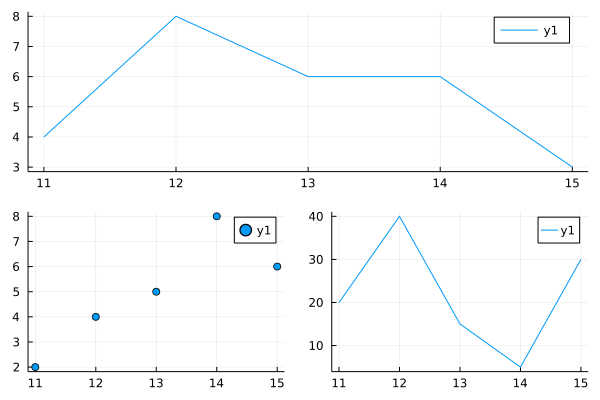
Saving the plot..
julia> savefig("myplot.png")julia> savefig("myplot.pdf")julia> savefig("myplot.svg")
Probabilistic analysis
Julia has a very elegant package to deal with probability analysis, the Distributions package.
julia> using Distributions
The idea is that we first create a Distribution object, of the distribution family and with the parameter required, and then we operate on it, for example to sample or to retrieve a quantile. The following table gives the distribution constructors for some of the most common distributions:
| Discrete distr. | Constructor | Continuous distr. | Constructor |
|---|---|---|---|
| Discrete uniform | DiscreteUniform(lRange,uRange) | Uniform | Uniform(lRange,uRange) |
| Bernoulli | Bernoulli(p) | Exponential | Exponential(rate) |
| Binomial | Binomial(n,p) | Laplace | Laplace(loc, scale) |
| Categorical | Categorical(ps) | Normal | Normal(μ,σ) |
| Multinomial | Multinomial(n, ps) | Erlang | Erlang(n,rate) |
| Geometric | Geometric(p) | Cauchy | Cauchy(μ, σ) |
| Hypergeometric | Hypergeometric(nS, nF, nTrials) | Chisq | Chisq(df) |
| Poisson | Poisson(rate) | T Dist | TDist(df) |
| Negative Binomial | NegativeBinomial(nSucc,p) | F Dist | FDist(df1, df2) |
| Beta Dist | Beta(shapeα,shapeβ) | ||
| Gamma Dist | Gamma(shapeα,1/rateβ) |
julia> d = Normal(10,3) # note that the parameter is the standard deviation, not the varianceDistributions.Normal{Float64}(μ=10.0, σ=3.0)julia> mean(d)10.0julia> var(d)9.0julia> median(d)10.0julia> quantile(d,0.9)13.844654696633802julia> cdf(d,13.844)0.8999616952550467julia> pdf(d,0)0.0005140929987637017julia> sample = rand(d,1000)1000-element Vector{Float64}: 8.06280798368807 5.610245863333236 5.129188763241759 9.34700467964936 11.476737059575548 12.942939436372447 10.23987048851518 14.647373659128375 5.975172277350334 11.236484904048904 ⋮ 12.403354837956826 11.207094126354857 10.268133622702884 11.218490588652548 13.852959856785546 9.729258694575801 9.830940369955442 9.918812742056703 9.48307358298061julia> rand(d,10,2,3)10×2×3 Array{Float64, 3}: [:, :, 1] = 10.8062 6.60818 7.9932 9.37579 7.66951 10.1019 9.22129 8.48094 4.6101 11.3663 5.48889 12.841 8.72932 5.66683 8.24601 6.1645 6.40937 13.4191 11.2196 7.33339 [:, :, 2] = 10.6626 15.6785 10.7449 9.40207 12.826 11.7641 3.18095 9.36946 11.7532 12.6085 10.6311 18.5023 8.97362 15.4287 6.57179 11.7876 16.27 13.5498 6.60767 15.6316 [:, :, 3] = 2.49457 9.6878 7.7509 10.0882 12.2083 12.1057 11.2507 12.2525 8.523 11.6519 10.4712 10.7674 9.43861 7.72881 9.96767 11.8262 18.5956 8.25542 8.68291 6.75197julia> density(sample)Plot{Plots.GRBackend() n=1}
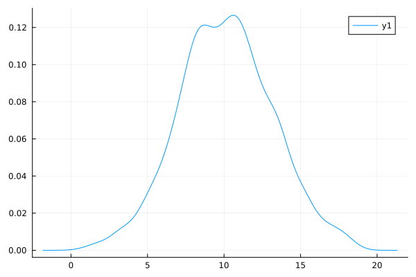
julia> plot!(d)Plot{Plots.GRBackend() n=2}
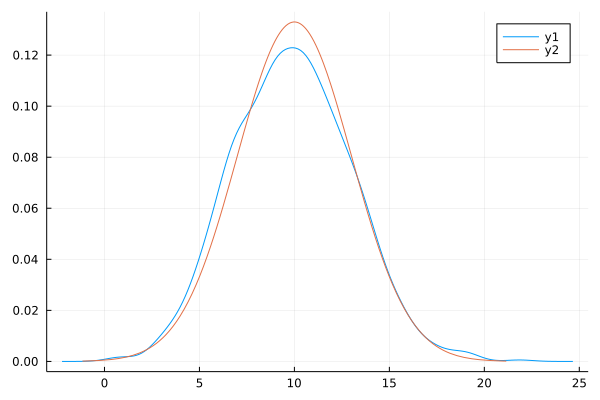
julia> fit(Normal, sample) # using MLEDistributions.Normal{Float64}(μ=9.889575331472637, σ=3.1050339802530043)
Curve fitting
LsqFit is a very flexible data fitting package for linear and nonlinear arbitrary functions (using least squares). Let's use it to fit a logistic growth curve (Verhulst model) of volumes for a forest stand.
julia> using LsqFitjulia> data = DataFrame( age = 20:5:90, vol = [64,112,170,231,293,352,408,459,505,546,582,613,640,663,683] ) # Scots Pine, data from the UK Forestry Commission https://web.archive.org/web/20170119072737/http://forestry.gov.uk/pdf/FCBK048.pdf/$FILE/FCBK048.pdf15×2 DataFrame Row │ age vol │ Int64 Int64 ─────┼────────────── 1 │ 20 64 2 │ 25 112 3 │ 30 170 4 │ 35 231 5 │ 40 293 6 │ 45 352 7 │ 50 408 8 │ 55 459 9 │ 60 505 10 │ 65 546 11 │ 70 582 12 │ 75 613 13 │ 80 640 14 │ 85 663 15 │ 90 683julia> plot(data.vol)Plot{Plots.GRBackend() n=1}
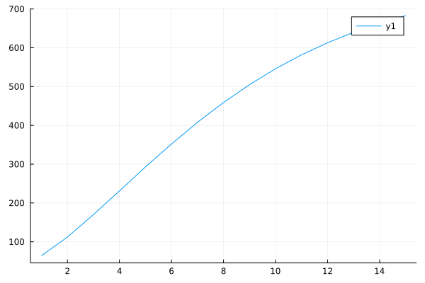
julia> logisticModel(age,parameters) = parameters[1]/(1+exp(-parameters[2] * (age-parameters[3]) ))logisticModel (generic function with 1 method)julia> logisticModelVec(age,parameters) = logisticModel.(age,Ref(parameters))logisticModelVec (generic function with 1 method)julia> initialParameters = [1000,0.02,50] #max growth; growth rate, mid age3-element Vector{Float64}: 1000.0 0.02 50.0julia> fitobject = curve_fit(logisticModelVec, data.age, data.vol, initialParameters)LsqFit.LsqFitResult{Vector{Float64}, Vector{Float64}, Matrix{Float64}, Vector{Int64}}([692.5825413201447, 0.0730342753017813, 45.521079747061144], [28.97750654868652, 14.4747120457303, -1.3542656293143693, -11.572229993656407, -15.595058416701022, -12.297282501288635, -5.569946832126675, 2.5891442587341658, 9.0377822008561, 12.048522818740707, 11.305933439788191, 7.51664984555066, 0.9186273617362986, -7.11365784284169, -16.307121770375602], [0.1342475459642054 -2054.3321912028164 -5.878930833778442; 0.1826131969850543 -2121.443789792599 -7.5501928577705195; … ; 0.9470154140965453 1371.9661652874784 -2.538077366651779; 0.9626186605323886 1108.4980035881208 -1.820150919492338], true, Int64[])julia> fitparams = fitobject.param3-element Vector{Float64}: 692.5825413201447 0.0730342753017813 45.521079747061144julia> fitobject.resid15-element Vector{Float64}: 28.97750654868652 14.4747120457303 -1.3542656293143693 -11.572229993656407 -15.595058416701022 -12.297282501288635 -5.569946832126675 2.5891442587341658 9.0377822008561 12.048522818740707 11.305933439788191 7.51664984555066 0.9186273617362986 -7.11365784284169 -16.307121770375602julia> residuals = logisticModelVec(data.age,fitparams) .- data.vol15-element Vector{Float64}: 28.97750654868652 14.4747120457303 -1.3542656293143693 -11.572229993656407 -15.595058416701022 -12.297282501288635 -5.569946832126675 2.5891442587341658 9.0377822008561 12.048522818740707 11.305933439788191 7.51664984555066 0.9186273617362986 -7.11365784284169 -16.307121770375602julia> fitobject.resid == residualstruejulia> sigma = stderror(fitobject)3-element Vector{Float64}: 12.682368775085612 0.0035444978135975988 0.7982532437184201julia> confidence_inter = confidence_interval(fitobject, 0.05) # 5% significance level3-element Vector{Tuple{Float64, Float64}}: (664.9500335224171, 720.2150491178724) (0.06531147799078742, 0.08075707261277519) (43.78183533832397, 47.260324155798315)julia> x = 0:maximum(data.age)*1.50.0:1.0:135.0julia> plot(x->logisticModel(x,fitparams),0,maximum(x), label= "Fitted vols", legend=:topleft)Plot{Plots.GRBackend() n=1}julia> plot!(data.age, data.vol, seriestype=:scatter, label = "Obs vols")Plot{Plots.GRBackend() n=2}julia> plot!(data.age, residuals, seriestype=:bar, label = "Residuals")Plot{Plots.GRBackend() n=3}
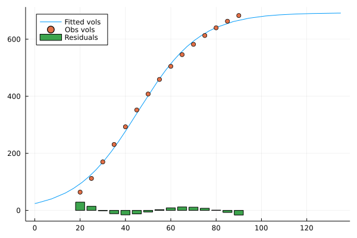
Constrained optimisation
JuMP is the leading library to express complex optimisation problems in a clear, mathematical friendly syntax, compute the information required by the solver engines to solve the optimisation problem, pass the problem to the aforementioned solver engines and retrieve the solutions.
JuMP has the same flexibility and expressivity of dedicated algeabric modelling languages as GAMS or AMPL but with the advantage of being a library within a much more general programming language, with larger community, development tools, language constructs and possibility to interface the specific "optimisation component" of a model with the rest of the model.
We will see how to specify the variables, the constraints and the objective function of an optimisation model, how to "solve" it and how to retrieve the optimal values
A linear example: the classical "transport" problem
Obj: minimise transport costs $c$ from several plants $p$ to several markets $m$ under the contraint to satisfy the demand $d_m$ at each market while respecting the production capacity $c_p$ of each plant: $min_{x_{p,m}} \sum_p \sum_m c_{p,m} * x_{p,m}$ subject to: $\sum_m x_{p,m} \leq d_m$ $\sum_p x_{p,m} \geq c_m$
julia> using JuMP, GLPK, DataFrames, CSV
"Sets" and exogenous parameters definition
index sets
julia> orig = ["Epinal", "Bordeaux", "Grenoble"] # plant/sawmills origin of timber3-element Vector{String}: "Epinal" "Bordeaux" "Grenoble"julia> dest = ["Paris", "Lyon", "Nantes", "Tulouse", "Lille", "Marseille", "Strasbourg"] # markets7-element Vector{String}: "Paris" "Lyon" "Nantes" "Tulouse" "Lille" "Marseille" "Strasbourg"julia> prod = ["Fuelwood", "Sawnwood", "Pannels"]3-element Vector{String}: "Fuelwood" "Sawnwood" "Pannels"
Read input data into DataFrames and then into Dictionaries with 2D or 3D tuples of index sets as keys
supply(prod, orig) amounts available at origins
julia> supplytable = CSV.read(IOBuffer(""" prod Epinal Bordeaux Grenoble Fuelwood 400 700 800 Sawnwood 800 1600 1800 Pannels 200 300 300 """), DataFrame, delim=" ", ignorerepeated=true,copycols=true)3×4 DataFrame Row │ prod Epinal Bordeaux Grenoble │ String15 Int64 Int64 Int64 ─────┼────────────────────────────────────── 1 │ Fuelwood 400 700 800 2 │ Sawnwood 800 1600 1800 3 │ Pannels 200 300 300julia> supply = Dict( (r[:prod],o) => r[Symbol(o)] for r in eachrow(supplytable), o in orig)Dict{Tuple{InlineStrings.String15, String}, Int64} with 9 entries: ("Sawnwood", "Bordeaux") => 1600 ("Sawnwood", "Epinal") => 800 ("Pannels", "Epinal") => 200 ("Pannels", "Bordeaux") => 300 ("Pannels", "Grenoble") => 300 ("Fuelwood", "Epinal") => 400 ("Fuelwood", "Bordeaux") => 700 ("Fuelwood", "Grenoble") => 800 ("Sawnwood", "Grenoble") => 1800
demand(prod, dest) amounts required at destinations
julia> demandtable = CSV.read(IOBuffer(""" prod Paris Lyon Nantes Tulouse Lille Marseille Strasbourg Fuelwood 300 300 100 75 650 225 250 Sawnwood 500 750 400 250 950 850 500 Pannels 100 100 0 50 200 100 250 """), DataFrame, delim=" ", ignorerepeated=true,copycols=true)3×8 DataFrame Row │ prod Paris Lyon Nantes Tulouse Lille Marseille Strasbourg │ String15 Int64 Int64 Int64 Int64 Int64 Int64 Int64 ─────┼─────────────────────────────────────────────────────────────────────── 1 │ Fuelwood 300 300 100 75 650 225 250 2 │ Sawnwood 500 750 400 250 950 850 500 3 │ Pannels 100 100 0 50 200 100 250julia> demand = Dict( (r[:prod],d) => r[Symbol(d)] for r in eachrow(demandtable), d in dest)Dict{Tuple{InlineStrings.String15, String}, Int64} with 21 entries: ("Fuelwood", "Paris") => 300 ("Pannels", "Paris") => 100 ("Pannels", "Lyon") => 100 ("Sawnwood", "Tulouse") => 250 ("Fuelwood", "Tulouse") => 75 ("Fuelwood", "Nantes") => 100 ("Sawnwood", "Lyon") => 750 ("Pannels", "Tulouse") => 50 ("Fuelwood", "Lille") => 650 ("Pannels", "Nantes") => 0 ("Sawnwood", "Lille") => 950 ("Pannels", "Marseille") => 100 ("Fuelwood", "Lyon") => 300 ("Fuelwood", "Strasbourg") => 250 ("Sawnwood", "Paris") => 500 ("Sawnwood", "Nantes") => 400 ("Fuelwood", "Marseille") => 225 ("Pannels", "Strasbourg") => 250 ("Sawnwood", "Strasbourg") => 500 ⋮ => ⋮
limit(orig, dest) of total units from any origin to destination
julia> defaultlimit = 625.0625.0julia> limit = Dict((o,d) => defaultlimit for o in orig, d in dest)Dict{Tuple{String, String}, Float64} with 21 entries: ("Bordeaux", "Lyon") => 625.0 ("Epinal", "Lille") => 625.0 ("Bordeaux", "Marseille") => 625.0 ("Epinal", "Marseille") => 625.0 ("Grenoble", "Paris") => 625.0 ("Grenoble", "Marseille") => 625.0 ("Bordeaux", "Lille") => 625.0 ("Grenoble", "Tulouse") => 625.0 ("Epinal", "Strasbourg") => 625.0 ("Epinal", "Tulouse") => 625.0 ("Bordeaux", "Nantes") => 625.0 ("Grenoble", "Lille") => 625.0 ("Grenoble", "Nantes") => 625.0 ("Grenoble", "Lyon") => 625.0 ("Bordeaux", "Strasbourg") => 625.0 ("Grenoble", "Strasbourg") => 625.0 ("Epinal", "Nantes") => 625.0 ("Epinal", "Paris") => 625.0 ("Bordeaux", "Paris") => 625.0 ⋮ => ⋮
cost(prod, orig, dest) Shipment cost per unit
julia> costtable = CSV.read(IOBuffer(""" prod orig Paris Lyon Nantes Tulouse Lille Marseille Strasbourg Fuelwood Epinal 30 10 8 10 11 71 6 Fuelwood Bordeaux 22 7 10 7 21 82 13 Fuelwood Grenoble 19 11 12 10 25 83 15 Sawnwood Epinal 39 14 11 14 16 82 8 Sawnwood Bordeaux 27 9 12 9 26 95 17 Sawnwood Grenoble 24 14 17 13 28 99 20 Pannels Epinal 41 15 12 16 17 86 8 Pannels Bordeaux 29 9 13 9 28 99 18 Pannels Grenoble 26 14 17 13 31 104 20 """), DataFrame, delim=" ", ignorerepeated=true,copycols=true)9×9 DataFrame Row │ prod orig Paris Lyon Nantes Tulouse Lille Marseille St ⋯ │ String15 String15 Int64 Int64 Int64 Int64 Int64 Int64 In ⋯ ─────┼────────────────────────────────────────────────────────────────────────── 1 │ Fuelwood Epinal 30 10 8 10 11 71 ⋯ 2 │ Fuelwood Bordeaux 22 7 10 7 21 82 3 │ Fuelwood Grenoble 19 11 12 10 25 83 4 │ Sawnwood Epinal 39 14 11 14 16 82 5 │ Sawnwood Bordeaux 27 9 12 9 26 95 ⋯ 6 │ Sawnwood Grenoble 24 14 17 13 28 99 7 │ Pannels Epinal 41 15 12 16 17 86 8 │ Pannels Bordeaux 29 9 13 9 28 99 9 │ Pannels Grenoble 26 14 17 13 31 104 ⋯ 1 column omittedjulia> cost = Dict( (r[:prod],r[:orig],d) => r[Symbol(d)] for r in eachrow(costtable), d in dest)Dict{Tuple{InlineStrings.String15, InlineStrings.String15, String}, Int64} with 63 entries: ("Sawnwood", "Epinal", "Lille") => 16 ("Sawnwood", "Epinal", "Paris") => 39 ("Sawnwood", "Bordeaux", "Lyon") => 9 ("Sawnwood", "Epinal", "Lyon") => 14 ("Sawnwood", "Bordeaux", "Strasbourg") => 17 ("Fuelwood", "Bordeaux", "Tulouse") => 7 ("Fuelwood", "Bordeaux", "Lille") => 21 ("Fuelwood", "Grenoble", "Strasbourg") => 15 ("Sawnwood", "Grenoble", "Strasbourg") => 20 ("Fuelwood", "Grenoble", "Lyon") => 11 ("Fuelwood", "Bordeaux", "Lyon") => 7 ("Sawnwood", "Grenoble", "Lille") => 28 ("Pannels", "Bordeaux", "Tulouse") => 9 ("Fuelwood", "Grenoble", "Nantes") => 12 ("Pannels", "Epinal", "Lyon") => 15 ("Sawnwood", "Bordeaux", "Tulouse") => 9 ("Pannels", "Bordeaux", "Paris") => 29 ("Fuelwood", "Bordeaux", "Paris") => 22 ("Sawnwood", "Epinal", "Nantes") => 11 ⋮ => ⋮
Optimisation model definition
julia> trmodel = Model(GLPK.Optimizer)A JuMP Model Feasibility problem with: Variables: 0 Model mode: AUTOMATIC CachingOptimizer state: EMPTY_OPTIMIZER Solver name: GLPKjulia> set_optimizer_attribute(trmodel, "msg_lev", GLPK.GLP_MSG_ON)
Model's endogenous variables definition
julia> @variables trmodel begin x[p in prod, o in orig, d in dest] >= 0 end(3-dimensional DenseAxisArray{JuMP.VariableRef,3,...} with index sets: Dimension 1, ["Fuelwood", "Sawnwood", "Pannels"] Dimension 2, ["Epinal", "Bordeaux", "Grenoble"] Dimension 3, ["Paris", "Lyon", "Nantes", "Tulouse", "Lille", "Marseille", "Strasbourg"] And data, a 3×3×7 Array{JuMP.VariableRef, 3}: [:, :, "Paris"] = x[Fuelwood,Epinal,Paris] … x[Fuelwood,Grenoble,Paris] x[Sawnwood,Epinal,Paris] x[Sawnwood,Grenoble,Paris] x[Pannels,Epinal,Paris] x[Pannels,Grenoble,Paris] [:, :, "Lyon"] = x[Fuelwood,Epinal,Lyon] … x[Fuelwood,Grenoble,Lyon] x[Sawnwood,Epinal,Lyon] x[Sawnwood,Grenoble,Lyon] x[Pannels,Epinal,Lyon] x[Pannels,Grenoble,Lyon] [:, :, "Nantes"] = x[Fuelwood,Epinal,Nantes] … x[Fuelwood,Grenoble,Nantes] x[Sawnwood,Epinal,Nantes] x[Sawnwood,Grenoble,Nantes] x[Pannels,Epinal,Nantes] x[Pannels,Grenoble,Nantes] [:, :, "Tulouse"] = x[Fuelwood,Epinal,Tulouse] … x[Fuelwood,Grenoble,Tulouse] x[Sawnwood,Epinal,Tulouse] x[Sawnwood,Grenoble,Tulouse] x[Pannels,Epinal,Tulouse] x[Pannels,Grenoble,Tulouse] [:, :, "Lille"] = x[Fuelwood,Epinal,Lille] … x[Fuelwood,Grenoble,Lille] x[Sawnwood,Epinal,Lille] x[Sawnwood,Grenoble,Lille] x[Pannels,Epinal,Lille] x[Pannels,Grenoble,Lille] [:, :, "Marseille"] = x[Fuelwood,Epinal,Marseille] … x[Fuelwood,Grenoble,Marseille] x[Sawnwood,Epinal,Marseille] x[Sawnwood,Grenoble,Marseille] x[Pannels,Epinal,Marseille] x[Pannels,Grenoble,Marseille] [:, :, "Strasbourg"] = x[Fuelwood,Epinal,Strasbourg] … x[Fuelwood,Grenoble,Strasbourg] x[Sawnwood,Epinal,Strasbourg] x[Sawnwood,Grenoble,Strasbourg] x[Pannels,Epinal,Strasbourg] x[Pannels,Grenoble,Strasbourg],)
Constraints definition
julia> @constraints trmodel begin supply[p in prod, o in orig], # observe supply limit at plant/sawmill origin o sum(x[p,o,d] for d in dest) <= supply[p,o] demand[p in prod, d in dest], # satisfy demand at market dest d sum(x[p,o,d] for o in orig) >= demand[p,d] c_total_shipment[o in orig, d in dest], sum(x[p,o,d] for p in prod) <= limit[o,d] end(2-dimensional DenseAxisArray{JuMP.ConstraintRef{JuMP.Model, MathOptInterface.ConstraintIndex{MathOptInterface.ScalarAffineFunction{Float64}, MathOptInterface.LessThan{Float64}}, JuMP.ScalarShape},2,...} with index sets: Dimension 1, ["Fuelwood", "Sawnwood", "Pannels"] Dimension 2, ["Epinal", "Bordeaux", "Grenoble"] And data, a 3×3 Matrix{JuMP.ConstraintRef{JuMP.Model, MathOptInterface.ConstraintIndex{MathOptInterface.ScalarAffineFunction{Float64}, MathOptInterface.LessThan{Float64}}, JuMP.ScalarShape}}: supply[Fuelwood,Epinal] : x[Fuelwood,Epinal,Paris] + x[Fuelwood,Epinal,Lyon] + x[Fuelwood,Epinal,Nantes] + x[Fuelwood,Epinal,Tulouse] + x[Fuelwood,Epinal,Lille] + x[Fuelwood,Epinal,Marseille] + x[Fuelwood,Epinal,Strasbourg] ≤ 400.0 … supply[Fuelwood,Grenoble] : x[Fuelwood,Grenoble,Paris] + x[Fuelwood,Grenoble,Lyon] + x[Fuelwood,Grenoble,Nantes] + x[Fuelwood,Grenoble,Tulouse] + x[Fuelwood,Grenoble,Lille] + x[Fuelwood,Grenoble,Marseille] + x[Fuelwood,Grenoble,Strasbourg] ≤ 800.0 supply[Sawnwood,Epinal] : x[Sawnwood,Epinal,Paris] + x[Sawnwood,Epinal,Lyon] + x[Sawnwood,Epinal,Nantes] + x[Sawnwood,Epinal,Tulouse] + x[Sawnwood,Epinal,Lille] + x[Sawnwood,Epinal,Marseille] + x[Sawnwood,Epinal,Strasbourg] ≤ 800.0 supply[Sawnwood,Grenoble] : x[Sawnwood,Grenoble,Paris] + x[Sawnwood,Grenoble,Lyon] + x[Sawnwood,Grenoble,Nantes] + x[Sawnwood,Grenoble,Tulouse] + x[Sawnwood,Grenoble,Lille] + x[Sawnwood,Grenoble,Marseille] + x[Sawnwood,Grenoble,Strasbourg] ≤ 1800.0 supply[Pannels,Epinal] : x[Pannels,Epinal,Paris] + x[Pannels,Epinal,Lyon] + x[Pannels,Epinal,Nantes] + x[Pannels,Epinal,Tulouse] + x[Pannels,Epinal,Lille] + x[Pannels,Epinal,Marseille] + x[Pannels,Epinal,Strasbourg] ≤ 200.0 supply[Pannels,Grenoble] : x[Pannels,Grenoble,Paris] + x[Pannels,Grenoble,Lyon] + x[Pannels,Grenoble,Nantes] + x[Pannels,Grenoble,Tulouse] + x[Pannels,Grenoble,Lille] + x[Pannels,Grenoble,Marseille] + x[Pannels,Grenoble,Strasbourg] ≤ 300.0, 2-dimensional DenseAxisArray{JuMP.ConstraintRef{JuMP.Model, MathOptInterface.ConstraintIndex{MathOptInterface.ScalarAffineFunction{Float64}, MathOptInterface.GreaterThan{Float64}}, JuMP.ScalarShape},2,...} with index sets: Dimension 1, ["Fuelwood", "Sawnwood", "Pannels"] Dimension 2, ["Paris", "Lyon", "Nantes", "Tulouse", "Lille", "Marseille", "Strasbourg"] And data, a 3×7 Matrix{JuMP.ConstraintRef{JuMP.Model, MathOptInterface.ConstraintIndex{MathOptInterface.ScalarAffineFunction{Float64}, MathOptInterface.GreaterThan{Float64}}, JuMP.ScalarShape}}: demand[Fuelwood,Paris] : x[Fuelwood,Epinal,Paris] + x[Fuelwood,Bordeaux,Paris] + x[Fuelwood,Grenoble,Paris] ≥ 300.0 … demand[Fuelwood,Strasbourg] : x[Fuelwood,Epinal,Strasbourg] + x[Fuelwood,Bordeaux,Strasbourg] + x[Fuelwood,Grenoble,Strasbourg] ≥ 250.0 demand[Sawnwood,Paris] : x[Sawnwood,Epinal,Paris] + x[Sawnwood,Bordeaux,Paris] + x[Sawnwood,Grenoble,Paris] ≥ 500.0 demand[Sawnwood,Strasbourg] : x[Sawnwood,Epinal,Strasbourg] + x[Sawnwood,Bordeaux,Strasbourg] + x[Sawnwood,Grenoble,Strasbourg] ≥ 500.0 demand[Pannels,Paris] : x[Pannels,Epinal,Paris] + x[Pannels,Bordeaux,Paris] + x[Pannels,Grenoble,Paris] ≥ 100.0 demand[Pannels,Strasbourg] : x[Pannels,Epinal,Strasbourg] + x[Pannels,Bordeaux,Strasbourg] + x[Pannels,Grenoble,Strasbourg] ≥ 250.0, 2-dimensional DenseAxisArray{JuMP.ConstraintRef{JuMP.Model, MathOptInterface.ConstraintIndex{MathOptInterface.ScalarAffineFunction{Float64}, MathOptInterface.LessThan{Float64}}, JuMP.ScalarShape},2,...} with index sets: Dimension 1, ["Epinal", "Bordeaux", "Grenoble"] Dimension 2, ["Paris", "Lyon", "Nantes", "Tulouse", "Lille", "Marseille", "Strasbourg"] And data, a 3×7 Matrix{JuMP.ConstraintRef{JuMP.Model, MathOptInterface.ConstraintIndex{MathOptInterface.ScalarAffineFunction{Float64}, MathOptInterface.LessThan{Float64}}, JuMP.ScalarShape}}: c_total_shipment[Epinal,Paris] : x[Fuelwood,Epinal,Paris] + x[Sawnwood,Epinal,Paris] + x[Pannels,Epinal,Paris] ≤ 625.0 … c_total_shipment[Epinal,Strasbourg] : x[Fuelwood,Epinal,Strasbourg] + x[Sawnwood,Epinal,Strasbourg] + x[Pannels,Epinal,Strasbourg] ≤ 625.0 c_total_shipment[Bordeaux,Paris] : x[Fuelwood,Bordeaux,Paris] + x[Sawnwood,Bordeaux,Paris] + x[Pannels,Bordeaux,Paris] ≤ 625.0 c_total_shipment[Bordeaux,Strasbourg] : x[Fuelwood,Bordeaux,Strasbourg] + x[Sawnwood,Bordeaux,Strasbourg] + x[Pannels,Bordeaux,Strasbourg] ≤ 625.0 c_total_shipment[Grenoble,Paris] : x[Fuelwood,Grenoble,Paris] + x[Sawnwood,Grenoble,Paris] + x[Pannels,Grenoble,Paris] ≤ 625.0 c_total_shipment[Grenoble,Strasbourg] : x[Fuelwood,Grenoble,Strasbourg] + x[Sawnwood,Grenoble,Strasbourg] + x[Pannels,Grenoble,Strasbourg] ≤ 625.0)
Objective function definition
julia> @objective trmodel Min begin sum(cost[p,o,d] * x[p,o,d] for p in prod, o in orig, d in dest) end30 x[Fuelwood,Epinal,Paris] + 39 x[Sawnwood,Epinal,Paris] + 41 x[Pannels,Epinal,Paris] + 22 x[Fuelwood,Bordeaux,Paris] + 27 x[Sawnwood,Bordeaux,Paris] + 29 x[Pannels,Bordeaux,Paris] + 19 x[Fuelwood,Grenoble,Paris] + 24 x[Sawnwood,Grenoble,Paris] + 26 x[Pannels,Grenoble,Paris] + 10 x[Fuelwood,Epinal,Lyon] + 14 x[Sawnwood,Epinal,Lyon] + 15 x[Pannels,Epinal,Lyon] + 7 x[Fuelwood,Bordeaux,Lyon] + 9 x[Sawnwood,Bordeaux,Lyon] + 9 x[Pannels,Bordeaux,Lyon] + 11 x[Fuelwood,Grenoble,Lyon] + 14 x[Sawnwood,Grenoble,Lyon] + 14 x[Pannels,Grenoble,Lyon] + 8 x[Fuelwood,Epinal,Nantes] + 11 x[Sawnwood,Epinal,Nantes] + 12 x[Pannels,Epinal,Nantes] + 10 x[Fuelwood,Bordeaux,Nantes] + 12 x[Sawnwood,Bordeaux,Nantes] + 13 x[Pannels,Bordeaux,Nantes] + 12 x[Fuelwood,Grenoble,Nantes] + 17 x[Sawnwood,Grenoble,Nantes] + 17 x[Pannels,Grenoble,Nantes] + 10 x[Fuelwood,Epinal,Tulouse] + 14 x[Sawnwood,Epinal,Tulouse] + 16 x[Pannels,Epinal,Tulouse] + 7 x[Fuelwood,Bordeaux,Tulouse] + 9 x[Sawnwood,Bordeaux,Tulouse] + 9 x[Pannels,Bordeaux,Tulouse] + 10 x[Fuelwood,Grenoble,Tulouse] + 13 x[Sawnwood,Grenoble,Tulouse] + 13 x[Pannels,Grenoble,Tulouse] + 11 x[Fuelwood,Epinal,Lille] + 16 x[Sawnwood,Epinal,Lille] + 17 x[Pannels,Epinal,Lille] + 21 x[Fuelwood,Bordeaux,Lille] + 26 x[Sawnwood,Bordeaux,Lille] + 28 x[Pannels,Bordeaux,Lille] + 25 x[Fuelwood,Grenoble,Lille] + 28 x[Sawnwood,Grenoble,Lille] + 31 x[Pannels,Grenoble,Lille] + 71 x[Fuelwood,Epinal,Marseille] + 82 x[Sawnwood,Epinal,Marseille] + 86 x[Pannels,Epinal,Marseille] + 82 x[Fuelwood,Bordeaux,Marseille] + 95 x[Sawnwood,Bordeaux,Marseille] + 99 x[Pannels,Bordeaux,Marseille] + 83 x[Fuelwood,Grenoble,Marseille] + 99 x[Sawnwood,Grenoble,Marseille] + 104 x[Pannels,Grenoble,Marseille] + 6 x[Fuelwood,Epinal,Strasbourg] + 8 x[Sawnwood,Epinal,Strasbourg] + 8 x[Pannels,Epinal,Strasbourg] + 13 x[Fuelwood,Bordeaux,Strasbourg] + 17 x[Sawnwood,Bordeaux,Strasbourg] + 18 x[Pannels,Bordeaux,Strasbourg] + 15 x[Fuelwood,Grenoble,Strasbourg] + 20 x[Sawnwood,Grenoble,Strasbourg] + 20 x[Pannels,Grenoble,Strasbourg]
Human-readable visualisatio nof the model
julia> print(trmodel)Min 30 x[Fuelwood,Epinal,Paris] + 39 x[Sawnwood,Epinal,Paris] + 41 x[Pannels,Epinal,Paris] + 22 x[Fuelwood,Bordeaux,Paris] + 27 x[Sawnwood,Bordeaux,Paris] + 29 x[Pannels,Bordeaux,Paris] + 19 x[Fuelwood,Grenoble,Paris] + 24 x[Sawnwood,Grenoble,Paris] + 26 x[Pannels,Grenoble,Paris] + 10 x[Fuelwood,Epinal,Lyon] + 14 x[Sawnwood,Epinal,Lyon] + 15 x[Pannels,Epinal,Lyon] + 7 x[Fuelwood,Bordeaux,Lyon] + 9 x[Sawnwood,Bordeaux,Lyon] + 9 x[Pannels,Bordeaux,Lyon] + 11 x[Fuelwood,Grenoble,Lyon] + 14 x[Sawnwood,Grenoble,Lyon] + 14 x[Pannels,Grenoble,Lyon] + 8 x[Fuelwood,Epinal,Nantes] + 11 x[Sawnwood,Epinal,Nantes] + 12 x[Pannels,Epinal,Nantes] + 10 x[Fuelwood,Bordeaux,Nantes] + 12 x[Sawnwood,Bordeaux,Nantes] + 13 x[Pannels,Bordeaux,Nantes] + 12 x[Fuelwood,Grenoble,Nantes] + 17 x[Sawnwood,Grenoble,Nantes] + 17 x[Pannels,Grenoble,Nantes] + 10 x[Fuelwood,Epinal,Tulouse] + 14 x[Sawnwood,Epinal,Tulouse] + 16 x[Pannels,Epinal,Tulouse] + 7 x[Fuelwood,Bordeaux,Tulouse] + 9 x[Sawnwood,Bordeaux,Tulouse] + 9 x[Pannels,Bordeaux,Tulouse] + 10 x[Fuelwood,Grenoble,Tulouse] + 13 x[Sawnwood,Grenoble,Tulouse] + 13 x[Pannels,Grenoble,Tulouse] + 11 x[Fuelwood,Epinal,Lille] + 16 x[Sawnwood,Epinal,Lille] + 17 x[Pannels,Epinal,Lille] + 21 x[Fuelwood,Bordeaux,Lille] + 26 x[Sawnwood,Bordeaux,Lille] + 28 x[Pannels,Bordeaux,Lille] + 25 x[Fuelwood,Grenoble,Lille] + 28 x[Sawnwood,Grenoble,Lille] + 31 x[Pannels,Grenoble,Lille] + 71 x[Fuelwood,Epinal,Marseille] + 82 x[Sawnwood,Epinal,Marseille] + 86 x[Pannels,Epinal,Marseille] + 82 x[Fuelwood,Bordeaux,Marseille] + 95 x[Sawnwood,Bordeaux,Marseille] + 99 x[Pannels,Bordeaux,Marseille] + 83 x[Fuelwood,Grenoble,Marseille] + 99 x[Sawnwood,Grenoble,Marseille] + 104 x[Pannels,Grenoble,Marseille] + 6 x[Fuelwood,Epinal,Strasbourg] + 8 x[Sawnwood,Epinal,Strasbourg] + 8 x[Pannels,Epinal,Strasbourg] + 13 x[Fuelwood,Bordeaux,Strasbourg] + 17 x[Sawnwood,Bordeaux,Strasbourg] + 18 x[Pannels,Bordeaux,Strasbourg] + 15 x[Fuelwood,Grenoble,Strasbourg] + 20 x[Sawnwood,Grenoble,Strasbourg] + 20 x[Pannels,Grenoble,Strasbourg] Subject to demand[Fuelwood,Paris] : x[Fuelwood,Epinal,Paris] + x[Fuelwood,Bordeaux,Paris] + x[Fuelwood,Grenoble,Paris] ≥ 300.0 demand[Sawnwood,Paris] : x[Sawnwood,Epinal,Paris] + x[Sawnwood,Bordeaux,Paris] + x[Sawnwood,Grenoble,Paris] ≥ 500.0 demand[Pannels,Paris] : x[Pannels,Epinal,Paris] + x[Pannels,Bordeaux,Paris] + x[Pannels,Grenoble,Paris] ≥ 100.0 demand[Fuelwood,Lyon] : x[Fuelwood,Epinal,Lyon] + x[Fuelwood,Bordeaux,Lyon] + x[Fuelwood,Grenoble,Lyon] ≥ 300.0 demand[Sawnwood,Lyon] : x[Sawnwood,Epinal,Lyon] + x[Sawnwood,Bordeaux,Lyon] + x[Sawnwood,Grenoble,Lyon] ≥ 750.0 demand[Pannels,Lyon] : x[Pannels,Epinal,Lyon] + x[Pannels,Bordeaux,Lyon] + x[Pannels,Grenoble,Lyon] ≥ 100.0 demand[Fuelwood,Nantes] : x[Fuelwood,Epinal,Nantes] + x[Fuelwood,Bordeaux,Nantes] + x[Fuelwood,Grenoble,Nantes] ≥ 100.0 demand[Sawnwood,Nantes] : x[Sawnwood,Epinal,Nantes] + x[Sawnwood,Bordeaux,Nantes] + x[Sawnwood,Grenoble,Nantes] ≥ 400.0 demand[Pannels,Nantes] : x[Pannels,Epinal,Nantes] + x[Pannels,Bordeaux,Nantes] + x[Pannels,Grenoble,Nantes] ≥ 0.0 demand[Fuelwood,Tulouse] : x[Fuelwood,Epinal,Tulouse] + x[Fuelwood,Bordeaux,Tulouse] + x[Fuelwood,Grenoble,Tulouse] ≥ 75.0 demand[Sawnwood,Tulouse] : x[Sawnwood,Epinal,Tulouse] + x[Sawnwood,Bordeaux,Tulouse] + x[Sawnwood,Grenoble,Tulouse] ≥ 250.0 demand[Pannels,Tulouse] : x[Pannels,Epinal,Tulouse] + x[Pannels,Bordeaux,Tulouse] + x[Pannels,Grenoble,Tulouse] ≥ 50.0 demand[Fuelwood,Lille] : x[Fuelwood,Epinal,Lille] + x[Fuelwood,Bordeaux,Lille] + x[Fuelwood,Grenoble,Lille] ≥ 650.0 demand[Sawnwood,Lille] : x[Sawnwood,Epinal,Lille] + x[Sawnwood,Bordeaux,Lille] + x[Sawnwood,Grenoble,Lille] ≥ 950.0 demand[Pannels,Lille] : x[Pannels,Epinal,Lille] + x[Pannels,Bordeaux,Lille] + x[Pannels,Grenoble,Lille] ≥ 200.0 demand[Fuelwood,Marseille] : x[Fuelwood,Epinal,Marseille] + x[Fuelwood,Bordeaux,Marseille] + x[Fuelwood,Grenoble,Marseille] ≥ 225.0 demand[Sawnwood,Marseille] : x[Sawnwood,Epinal,Marseille] + x[Sawnwood,Bordeaux,Marseille] + x[Sawnwood,Grenoble,Marseille] ≥ 850.0 demand[Pannels,Marseille] : x[Pannels,Epinal,Marseille] + x[Pannels,Bordeaux,Marseille] + x[Pannels,Grenoble,Marseille] ≥ 100.0 demand[Fuelwood,Strasbourg] : x[Fuelwood,Epinal,Strasbourg] + x[Fuelwood,Bordeaux,Strasbourg] + x[Fuelwood,Grenoble,Strasbourg] ≥ 250.0 demand[Sawnwood,Strasbourg] : x[Sawnwood,Epinal,Strasbourg] + x[Sawnwood,Bordeaux,Strasbourg] + x[Sawnwood,Grenoble,Strasbourg] ≥ 500.0 demand[Pannels,Strasbourg] : x[Pannels,Epinal,Strasbourg] + x[Pannels,Bordeaux,Strasbourg] + x[Pannels,Grenoble,Strasbourg] ≥ 250.0 supply[Fuelwood,Epinal] : x[Fuelwood,Epinal,Paris] + x[Fuelwood,Epinal,Lyon] + x[Fuelwood,Epinal,Nantes] + x[Fuelwood,Epinal,Tulouse] + x[Fuelwood,Epinal,Lille] + x[Fuelwood,Epinal,Marseille] + x[Fuelwood,Epinal,Strasbourg] ≤ 400.0 supply[Sawnwood,Epinal] : x[Sawnwood,Epinal,Paris] + x[Sawnwood,Epinal,Lyon] + x[Sawnwood,Epinal,Nantes] + x[Sawnwood,Epinal,Tulouse] + x[Sawnwood,Epinal,Lille] + x[Sawnwood,Epinal,Marseille] + x[Sawnwood,Epinal,Strasbourg] ≤ 800.0 supply[Pannels,Epinal] : x[Pannels,Epinal,Paris] + x[Pannels,Epinal,Lyon] + x[Pannels,Epinal,Nantes] + x[Pannels,Epinal,Tulouse] + x[Pannels,Epinal,Lille] + x[Pannels,Epinal,Marseille] + x[Pannels,Epinal,Strasbourg] ≤ 200.0 supply[Fuelwood,Bordeaux] : x[Fuelwood,Bordeaux,Paris] + x[Fuelwood,Bordeaux,Lyon] + x[Fuelwood,Bordeaux,Nantes] + x[Fuelwood,Bordeaux,Tulouse] + x[Fuelwood,Bordeaux,Lille] + x[Fuelwood,Bordeaux,Marseille] + x[Fuelwood,Bordeaux,Strasbourg] ≤ 700.0 supply[Sawnwood,Bordeaux] : x[Sawnwood,Bordeaux,Paris] + x[Sawnwood,Bordeaux,Lyon] + x[Sawnwood,Bordeaux,Nantes] + x[Sawnwood,Bordeaux,Tulouse] + x[Sawnwood,Bordeaux,Lille] + x[Sawnwood,Bordeaux,Marseille] + x[Sawnwood,Bordeaux,Strasbourg] ≤ 1600.0 supply[Pannels,Bordeaux] : x[Pannels,Bordeaux,Paris] + x[Pannels,Bordeaux,Lyon] + x[Pannels,Bordeaux,Nantes] + x[Pannels,Bordeaux,Tulouse] + x[Pannels,Bordeaux,Lille] + x[Pannels,Bordeaux,Marseille] + x[Pannels,Bordeaux,Strasbourg] ≤ 300.0 supply[Fuelwood,Grenoble] : x[Fuelwood,Grenoble,Paris] + x[Fuelwood,Grenoble,Lyon] + x[Fuelwood,Grenoble,Nantes] + x[Fuelwood,Grenoble,Tulouse] + x[Fuelwood,Grenoble,Lille] + x[Fuelwood,Grenoble,Marseille] + x[Fuelwood,Grenoble,Strasbourg] ≤ 800.0 supply[Sawnwood,Grenoble] : x[Sawnwood,Grenoble,Paris] + x[Sawnwood,Grenoble,Lyon] + x[Sawnwood,Grenoble,Nantes] + x[Sawnwood,Grenoble,Tulouse] + x[Sawnwood,Grenoble,Lille] + x[Sawnwood,Grenoble,Marseille] + x[Sawnwood,Grenoble,Strasbourg] ≤ 1800.0 supply[Pannels,Grenoble] : x[Pannels,Grenoble,Paris] + x[Pannels,Grenoble,Lyon] + x[Pannels,Grenoble,Nantes] + x[Pannels,Grenoble,Tulouse] + x[Pannels,Grenoble,Lille] + x[Pannels,Grenoble,Marseille] + x[Pannels,Grenoble,Strasbourg] ≤ 300.0 c_total_shipment[Epinal,Paris] : x[Fuelwood,Epinal,Paris] + x[Sawnwood,Epinal,Paris] + x[Pannels,Epinal,Paris] ≤ 625.0 c_total_shipment[Bordeaux,Paris] : x[Fuelwood,Bordeaux,Paris] + x[Sawnwood,Bordeaux,Paris] + x[Pannels,Bordeaux,Paris] ≤ 625.0 c_total_shipment[Grenoble,Paris] : x[Fuelwood,Grenoble,Paris] + x[Sawnwood,Grenoble,Paris] + x[Pannels,Grenoble,Paris] ≤ 625.0 c_total_shipment[Epinal,Lyon] : x[Fuelwood,Epinal,Lyon] + x[Sawnwood,Epinal,Lyon] + x[Pannels,Epinal,Lyon] ≤ 625.0 c_total_shipment[Bordeaux,Lyon] : x[Fuelwood,Bordeaux,Lyon] + x[Sawnwood,Bordeaux,Lyon] + x[Pannels,Bordeaux,Lyon] ≤ 625.0 c_total_shipment[Grenoble,Lyon] : x[Fuelwood,Grenoble,Lyon] + x[Sawnwood,Grenoble,Lyon] + x[Pannels,Grenoble,Lyon] ≤ 625.0 c_total_shipment[Epinal,Nantes] : x[Fuelwood,Epinal,Nantes] + x[Sawnwood,Epinal,Nantes] + x[Pannels,Epinal,Nantes] ≤ 625.0 c_total_shipment[Bordeaux,Nantes] : x[Fuelwood,Bordeaux,Nantes] + x[Sawnwood,Bordeaux,Nantes] + x[Pannels,Bordeaux,Nantes] ≤ 625.0 c_total_shipment[Grenoble,Nantes] : x[Fuelwood,Grenoble,Nantes] + x[Sawnwood,Grenoble,Nantes] + x[Pannels,Grenoble,Nantes] ≤ 625.0 c_total_shipment[Epinal,Tulouse] : x[Fuelwood,Epinal,Tulouse] + x[Sawnwood,Epinal,Tulouse] + x[Pannels,Epinal,Tulouse] ≤ 625.0 c_total_shipment[Bordeaux,Tulouse] : x[Fuelwood,Bordeaux,Tulouse] + x[Sawnwood,Bordeaux,Tulouse] + x[Pannels,Bordeaux,Tulouse] ≤ 625.0 c_total_shipment[Grenoble,Tulouse] : x[Fuelwood,Grenoble,Tulouse] + x[Sawnwood,Grenoble,Tulouse] + x[Pannels,Grenoble,Tulouse] ≤ 625.0 c_total_shipment[Epinal,Lille] : x[Fuelwood,Epinal,Lille] + x[Sawnwood,Epinal,Lille] + x[Pannels,Epinal,Lille] ≤ 625.0 c_total_shipment[Bordeaux,Lille] : x[Fuelwood,Bordeaux,Lille] + x[Sawnwood,Bordeaux,Lille] + x[Pannels,Bordeaux,Lille] ≤ 625.0 c_total_shipment[Grenoble,Lille] : x[Fuelwood,Grenoble,Lille] + x[Sawnwood,Grenoble,Lille] + x[Pannels,Grenoble,Lille] ≤ 625.0 c_total_shipment[Epinal,Marseille] : x[Fuelwood,Epinal,Marseille] + x[Sawnwood,Epinal,Marseille] + x[Pannels,Epinal,Marseille] ≤ 625.0 c_total_shipment[Bordeaux,Marseille] : x[Fuelwood,Bordeaux,Marseille] + x[Sawnwood,Bordeaux,Marseille] + x[Pannels,Bordeaux,Marseille] ≤ 625.0 c_total_shipment[Grenoble,Marseille] : x[Fuelwood,Grenoble,Marseille] + x[Sawnwood,Grenoble,Marseille] + x[Pannels,Grenoble,Marseille] ≤ 625.0 c_total_shipment[Epinal,Strasbourg] : x[Fuelwood,Epinal,Strasbourg] + x[Sawnwood,Epinal,Strasbourg] + x[Pannels,Epinal,Strasbourg] ≤ 625.0 c_total_shipment[Bordeaux,Strasbourg] : x[Fuelwood,Bordeaux,Strasbourg] + x[Sawnwood,Bordeaux,Strasbourg] + x[Pannels,Bordeaux,Strasbourg] ≤ 625.0 c_total_shipment[Grenoble,Strasbourg] : x[Fuelwood,Grenoble,Strasbourg] + x[Sawnwood,Grenoble,Strasbourg] + x[Pannels,Grenoble,Strasbourg] ≤ 625.0 x[Fuelwood,Epinal,Paris] ≥ 0.0 x[Sawnwood,Epinal,Paris] ≥ 0.0 x[Pannels,Epinal,Paris] ≥ 0.0 x[Fuelwood,Bordeaux,Paris] ≥ 0.0 x[Sawnwood,Bordeaux,Paris] ≥ 0.0 x[Pannels,Bordeaux,Paris] ≥ 0.0 x[Fuelwood,Grenoble,Paris] ≥ 0.0 x[Sawnwood,Grenoble,Paris] ≥ 0.0 x[Pannels,Grenoble,Paris] ≥ 0.0 x[Fuelwood,Epinal,Lyon] ≥ 0.0 x[Sawnwood,Epinal,Lyon] ≥ 0.0 x[Pannels,Epinal,Lyon] ≥ 0.0 x[Fuelwood,Bordeaux,Lyon] ≥ 0.0 x[Sawnwood,Bordeaux,Lyon] ≥ 0.0 x[Pannels,Bordeaux,Lyon] ≥ 0.0 x[Fuelwood,Grenoble,Lyon] ≥ 0.0 x[Sawnwood,Grenoble,Lyon] ≥ 0.0 x[Pannels,Grenoble,Lyon] ≥ 0.0 x[Fuelwood,Epinal,Nantes] ≥ 0.0 x[Sawnwood,Epinal,Nantes] ≥ 0.0 x[Pannels,Epinal,Nantes] ≥ 0.0 x[Fuelwood,Bordeaux,Nantes] ≥ 0.0 x[Sawnwood,Bordeaux,Nantes] ≥ 0.0 x[Pannels,Bordeaux,Nantes] ≥ 0.0 x[Fuelwood,Grenoble,Nantes] ≥ 0.0 x[Sawnwood,Grenoble,Nantes] ≥ 0.0 x[Pannels,Grenoble,Nantes] ≥ 0.0 x[Fuelwood,Epinal,Tulouse] ≥ 0.0 x[Sawnwood,Epinal,Tulouse] ≥ 0.0 x[Pannels,Epinal,Tulouse] ≥ 0.0 x[Fuelwood,Bordeaux,Tulouse] ≥ 0.0 x[Sawnwood,Bordeaux,Tulouse] ≥ 0.0 x[Pannels,Bordeaux,Tulouse] ≥ 0.0 x[Fuelwood,Grenoble,Tulouse] ≥ 0.0 x[Sawnwood,Grenoble,Tulouse] ≥ 0.0 x[Pannels,Grenoble,Tulouse] ≥ 0.0 x[Fuelwood,Epinal,Lille] ≥ 0.0 x[Sawnwood,Epinal,Lille] ≥ 0.0 x[Pannels,Epinal,Lille] ≥ 0.0 x[Fuelwood,Bordeaux,Lille] ≥ 0.0 x[Sawnwood,Bordeaux,Lille] ≥ 0.0 x[Pannels,Bordeaux,Lille] ≥ 0.0 x[Fuelwood,Grenoble,Lille] ≥ 0.0 x[Sawnwood,Grenoble,Lille] ≥ 0.0 x[Pannels,Grenoble,Lille] ≥ 0.0 x[Fuelwood,Epinal,Marseille] ≥ 0.0 x[Sawnwood,Epinal,Marseille] ≥ 0.0 x[Pannels,Epinal,Marseille] ≥ 0.0 x[Fuelwood,Bordeaux,Marseille] ≥ 0.0 x[Sawnwood,Bordeaux,Marseille] ≥ 0.0 x[Pannels,Bordeaux,Marseille] ≥ 0.0 x[Fuelwood,Grenoble,Marseille] ≥ 0.0 x[Sawnwood,Grenoble,Marseille] ≥ 0.0 x[Pannels,Grenoble,Marseille] ≥ 0.0 x[Fuelwood,Epinal,Strasbourg] ≥ 0.0 x[Sawnwood,Epinal,Strasbourg] ≥ 0.0 x[Pannels,Epinal,Strasbourg] ≥ 0.0 x[Fuelwood,Bordeaux,Strasbourg] ≥ 0.0 x[Sawnwood,Bordeaux,Strasbourg] ≥ 0.0 x[Pannels,Bordeaux,Strasbourg] ≥ 0.0 x[Fuelwood,Grenoble,Strasbourg] ≥ 0.0 x[Sawnwood,Grenoble,Strasbourg] ≥ 0.0 x[Pannels,Grenoble,Strasbourg] ≥ 0.0
Model resolution
julia> optimize!(trmodel)0: obj = 0.000000000e+00 inf = 6.900e+03 (20) 38: obj = 2.172000000e+05 inf = 0.000e+00 (0) * 59: obj = 1.995000000e+05 inf = 0.000e+00 (0)julia> status = termination_status(trmodel)OPTIMAL::TerminationStatusCode = 1
Post-resolution information retrieval
Here, after the model has been "solved", we can retrieve information as the optimal level of the endogenous variables, the value of the opjective function at these optimal levels and the shadow costs of the contraints.
julia> if (status == MOI.OPTIMAL || status == MOI.LOCALLY_SOLVED || status == MOI.TIME_LIMIT) && has_values(trmodel) println("#################################################################") if (status == MOI.OPTIMAL) println("** Problem solved correctly **") else println("** Problem returned a (possibly suboptimal) solution **") end println("- Objective value (total costs): ", objective_value(trmodel)) println("- Optimal routes:\n") optRoutes = value.(x) for p in prod println("\n* $(p):") [println("$o --> $d: $(optRoutes[p,o,d])") for o in orig, d in dest] println("- Shadow prices of supply:") [println("$o = $(dual(supply[p,o]))") for o in orig] println("- Shadow prices of demand:") [println("$d = $(dual(demand[p,d]))") for d in dest] end else println("The model was not solved correctly.") println(status) end################################################################# ** Problem solved correctly ** - Objective value (total costs): 199500.0 - Optimal routes: * Fuelwood: Epinal --> Paris: 0.0 Bordeaux --> Paris: 225.0 Grenoble --> Paris: 75.0 Epinal --> Lyon: 0.0 Bordeaux --> Lyon: 150.0 Grenoble --> Lyon: 150.0 Epinal --> Nantes: 0.0 Bordeaux --> Nantes: 0.0 Grenoble --> Nantes: 100.0 Epinal --> Tulouse: 0.0 Bordeaux --> Tulouse: 75.0 Grenoble --> Tulouse: 0.0 Epinal --> Lille: 400.0 Bordeaux --> Lille: 250.0 Grenoble --> Lille: 0.0 Epinal --> Marseille: 0.0 Bordeaux --> Marseille: 0.0 Grenoble --> Marseille: 225.0 Epinal --> Strasbourg: 0.0 Bordeaux --> Strasbourg: 0.0 Grenoble --> Strasbourg: 250.0 - Shadow prices of supply: Epinal = -12.0 Bordeaux = -3.0 Grenoble = 0.0 - Shadow prices of demand: Paris = 25.0 Lyon = 11.0 Nantes = 12.0 Tulouse = 10.0 Lille = 24.0 Marseille = 83.0 Strasbourg = 16.0 * Sawnwood: Epinal --> Paris: 0.0 Bordeaux --> Paris: 0.0 Grenoble --> Paris: 500.0 Epinal --> Lyon: 0.0 Bordeaux --> Lyon: 375.0 Grenoble --> Lyon: 375.0 Epinal --> Nantes: 0.0 Bordeaux --> Nantes: 400.0 Grenoble --> Nantes: 0.0 Epinal --> Tulouse: 0.0 Bordeaux --> Tulouse: 250.0 Grenoble --> Tulouse: 0.0 Epinal --> Lille: 25.0 Bordeaux --> Lille: 300.0 Grenoble --> Lille: 625.0 Epinal --> Marseille: 625.0 Bordeaux --> Marseille: 50.0 Grenoble --> Marseille: 175.0 Epinal --> Strasbourg: 150.0 Bordeaux --> Strasbourg: 225.0 Grenoble --> Strasbourg: 125.0 - Shadow prices of supply: Epinal = -13.0 Bordeaux = -4.0 Grenoble = 0.0 - Shadow prices of demand: Paris = 30.0 Lyon = 14.0 Nantes = 16.0 Tulouse = 13.0 Lille = 30.0 Marseille = 99.0 Strasbourg = 21.0 * Pannels: Epinal --> Paris: 0.0 Bordeaux --> Paris: 50.0 Grenoble --> Paris: 50.0 Epinal --> Lyon: 0.0 Bordeaux --> Lyon: 100.0 Grenoble --> Lyon: 0.0 Epinal --> Nantes: 0.0 Bordeaux --> Nantes: 0.0 Grenoble --> Nantes: 0.0 Epinal --> Tulouse: 0.0 Bordeaux --> Tulouse: 50.0 Grenoble --> Tulouse: 0.0 Epinal --> Lille: 200.0 Bordeaux --> Lille: 0.0 Grenoble --> Lille: 0.0 Epinal --> Marseille: 0.0 Bordeaux --> Marseille: 100.0 Grenoble --> Marseille: 0.0 Epinal --> Strasbourg: 0.0 Bordeaux --> Strasbourg: 0.0 Grenoble --> Strasbourg: 250.0 - Shadow prices of supply: Epinal = -13.0 Bordeaux = -3.0 Grenoble = 0.0 - Shadow prices of demand: Paris = 32.0 Lyon = 13.0 Nantes = 0.0 Tulouse = 12.0 Lille = 31.0 Marseille = 102.0 Strasbourg = 21.0
A nonlinear example: portfolio optimisation
The problem objective is to choose the shares of different assets in the portfolio (here forest species, but the example is exactly the same considering other assets, for example financial investments) that maximise the portfolio expected returns while minimising its expected variance under the portfolio owner risk aversion risk. Here the "returns" are based on the timber production and the covariance between individual species of the portfolio is based on the observed volume growth covariances. The idea is that within the infinite possible allocations, the locus of those allocations for which is not possible to increase the portfolio profitability without increasing also its variance and the converse whose variance can not be lowered without at the same time lower its expected profitability are efficient in the Pareto meaning and form an "efficient frontier". Within this frontier the problem is to find the unique point that maximise the utility of the portfolio's owner given its risk aversion characteristic. Graphically the problem is depicted i nthe following picture:

Data originally from the Institut national de l'information géographique et forestière (IGN) of France. See the paper A. Dragicevic, A. Lobianco, A. Leblois (2016), ”Forest planning and productivity-risk trade-off through the Markowitz mean-variance model“, Forest Policy and Economics, Volume 64 for a thorough discussion of this model.
Declare the packages we are going to use:
julia> using JuMP, Ipopt, StatsPlots
Forest species names
julia> species = ["Chêne pédonculé", "Chêne sessile", "Hêtre", "Pin sylvestre"]4-element Vector{String}: "Chêne pédonculé" "Chêne sessile" "Hêtre" "Pin sylvestre"julia> nSpecies = length(species)4
Average productiities by specie This is implemented in a dictionary: key->value
julia> y = Dict( "Chêne pédonculé" => 1.83933333333333, "Chêne sessile" => 2.198, "Hêtre" => 3.286, "Pin sylvestre" => 3.3695)Dict{String, Float64} with 4 entries: "Hêtre" => 3.286 "Chêne pédonculé" => 1.83933 "Chêne sessile" => 2.198 "Pin sylvestre" => 3.3695
Covariance matrix between species
julia> σtable = [[0.037502535947712 0.016082745098039 0.027797176470588 -0.025589882352942] [0.016082745098039 0.015177019607843 0.018791960784314 -0.102880470588234] [0.027797176470588 0.018791960784314 0.031732078431373 -0.166391058823529] [-0.025589882352942 -0.102880470588234 -0.166391058823529 2.02950454411765]]4×4 Matrix{Float64}: 0.0375025 0.0160827 0.0277972 -0.0255899 0.0160827 0.015177 0.018792 -0.10288 0.0277972 0.018792 0.0317321 -0.166391 -0.0255899 -0.10288 -0.166391 2.0295
We reshape the covariance matrix in a dictionary (sp1,sp2) -> value The function (ix,x) = enumerate(X) returns a tuple of index position and element for each element of an array
julia> σ = Dict((i,j) => σtable[i_ix,j_ix] for (i_ix,i) in enumerate(species), (j_ix,j) in enumerate(species))Dict{Tuple{String, String}, Float64} with 16 entries: ("Pin sylvestre", "Chêne pédonculé") => -0.0255899 ("Hêtre", "Chêne pédonculé") => 0.0277972 ("Chêne pédonculé", "Chêne sessile") => 0.0160827 ("Chêne pédonculé", "Pin sylvestre") => -0.0255899 ("Chêne pédonculé", "Hêtre") => 0.0277972 ("Hêtre", "Pin sylvestre") => -0.166391 ("Pin sylvestre", "Chêne sessile") => -0.10288 ("Chêne pédonculé", "Chêne pédonculé") => 0.0375025 ("Hêtre", "Chêne sessile") => 0.018792 ("Chêne sessile", "Hêtre") => 0.018792 ("Hêtre", "Hêtre") => 0.0317321 ("Chêne sessile", "Pin sylvestre") => -0.10288 ("Pin sylvestre", "Hêtre") => -0.166391 ("Pin sylvestre", "Pin sylvestre") => 2.0295 ("Chêne sessile", "Chêne sessile") => 0.015177 ("Chêne sessile", "Chêne pédonculé") => 0.0160827julia> ################################################################################ ###### Showing the possible mean/variance of the portfolio by simulation ####### ################################################################################ nSamples = 10001000julia> shares = rand(nSamples,nSpecies)1000×4 Matrix{Float64}: 0.857544 0.358168 0.714206 0.539887 0.74978 0.287594 0.214135 0.516831 0.11053 0.967543 0.803186 0.639251 0.550254 0.775492 0.715306 0.655609 0.359139 0.175933 0.580716 0.397087 0.0463536 0.399651 0.0843567 0.595187 0.385862 0.354023 0.871394 0.409577 0.725671 0.711808 0.555773 0.13944 0.327527 0.00349933 0.627951 0.4587 0.812195 0.222474 0.404572 0.790733 ⋮ 0.940492 0.29685 0.27006 0.661839 0.800242 0.0229323 0.809486 0.853375 0.41116 0.193858 0.30917 0.828293 0.73218 0.695196 0.287749 0.78057 0.218681 0.168836 0.979795 0.342067 0.584438 0.653202 0.182601 0.231478 0.98808 0.0826992 0.747275 0.530222 0.469166 0.798967 0.894585 0.523067 0.858724 0.905515 0.839785 0.657002
Converting to probabilities
julia> import BetaML.Utils:softmaxjulia> [shares[i,:] = softmax(shares[i,:], β=one.(shares[i,:]) .* 5) for i in 1:nSamples]1000-element Vector{Vector{Float64}}: [0.5633854680746181, 0.04639000841973864, 0.27513866853119484, 0.11508585497444845] [0.6757409634926689, 0.0670127164245097, 0.04641322954719109, 0.2108330905356304] [0.008361719941903016, 0.6071214257713458, 0.2669193147467312, 0.11759753954002022] [0.12407208316020922, 0.3826246981157689, 0.2831912941147636, 0.21011192460925815] [0.17739969699667896, 0.0709784923714904, 0.5371567720287114, 0.21446503860311927] [0.042352764224207314, 0.2477747488010868, 0.05121586446481678, 0.658656622509889] [0.0698762388984897, 0.05959252192721206, 0.7918581592637335, 0.07867307991056431] [0.41425049370237854, 0.38650843886122954, 0.17714686314889916, 0.02209420428749265] [0.13130494469746365, 0.02598142451948623, 0.5897148197611294, 0.252998811021921] [0.48055298102785043, 0.025187187333789524, 0.06260372252143406, 0.4316561091169262] ⋮ [0.7556866601714841, 0.03024770296893701, 0.02645564877695111, 0.18760998808262744] [0.2965490419705496, 0.006084012208208362, 0.3105777875219173, 0.3867891582993247] [0.10012126904847496, 0.03378012951202738, 0.06012543350788544, 0.8059731679316121] [0.3112081209200864, 0.2586678969979613, 0.03372736817634253, 0.39639661390561004] [0.02058311910305543, 0.01604262922163409, 0.9252290045877261, 0.03814524708758473] [0.3682374082256613, 0.5193329548232044, 0.04937985793082915, 0.06304977902030527] [0.7081466482755057, 0.007657960618932915, 0.21243304473199429, 0.07176234637356722] [0.06288699339920313, 0.32712522213824835, 0.5276488868492673, 0.08233889761328084] [0.2826485398668308, 0.35715188527914943, 0.2571106916044648, 0.10308888324955477]julia> pScores = Array{Float64,2}(undef,0,2)0×2 Matrix{Float64}julia> for i in 1:nSamples global pScores pVar = sum(shares[i,j1] * shares[i,j2] * σ[species[j1],species[j2]] for j1 in 1:nSpecies, j2 in 1:nSpecies) pY = sum(shares[i,j]*y[species[j]] for j in 1:nSpecies) pScores = vcat(pScores,[pVar pY]) endjulia> #goodShares = [0,0,0.74,0.26] #pVar = sum(goodShares[j1] * goodShares[j2] * σ[species[j1],species[j2]] for j1 in 1:nSpecies, j2 in 1:nSpecies) #pY = sum(goodShares[j]*y[species[j]] for j in 1:nSpecies) scatter(pScores[:,1],pScores[:,2],colour=:blue)Plot{Plots.GRBackend() n=1}

Risk aversion coefficient
julia> α = 0.10.1
We declare an optimisation problem, we name it "m" and we let JuMP associate it with the most suitable solver within the one installed:
julia> port = Model(Ipopt.Optimizer)A JuMP Model Feasibility problem with: Variables: 0 Model mode: AUTOMATIC CachingOptimizer state: EMPTY_OPTIMIZER Solver name: Ipopt
We declare a set of variables, indicized by the species name:
julia> @variables port begin x[i in species] >= 0 end(1-dimensional DenseAxisArray{JuMP.VariableRef,1,...} with index sets: Dimension 1, ["Chêne pédonculé", "Chêne sessile", "Hêtre", "Pin sylvestre"] And data, a 4-element Vector{JuMP.VariableRef}: x[Chêne pédonculé] x[Chêne sessile] x[Hêtre] x[Pin sylvestre],)
We declare the constraint shat the sum of shares must be equal to 1
julia> @constraint(port, c_share, sum(x[i] for i in species) == 1)c_share : x[Chêne pédonculé] + x[Chêne sessile] + x[Hêtre] + x[Pin sylvestre] = 1.0
@objective port Min begin α * sum(x[i] * x[j] * σ[i,j] for i in species for j in species) - sum(x[i] * y[i] for i in species) end
julia> @NLobjective port Min α * sum(x[i] * x[j] * σ[i,j] for i in species for j in species) - sum(x[i] * y[i] for i in species)
Print the optimisation model in nice human-readable format:
julia> print(port)Min 0.1 * (x[Chêne pédonculé] * x[Chêne pédonculé] * 0.037502535947712 + x[Chêne pédonculé] * x[Chêne sessile] * 0.016082745098039 + x[Chêne pédonculé] * x[Hêtre] * 0.027797176470588 + x[Chêne pédonculé] * x[Pin sylvestre] * -0.025589882352942 + x[Chêne sessile] * x[Chêne pédonculé] * 0.016082745098039 + x[Chêne sessile] * x[Chêne sessile] * 0.015177019607843 + x[Chêne sessile] * x[Hêtre] * 0.018791960784314 + x[Chêne sessile] * x[Pin sylvestre] * -0.102880470588234 + x[Hêtre] * x[Chêne pédonculé] * 0.027797176470588 + x[Hêtre] * x[Chêne sessile] * 0.018791960784314 + x[Hêtre] * x[Hêtre] * 0.031732078431373 + x[Hêtre] * x[Pin sylvestre] * -0.166391058823529 + x[Pin sylvestre] * x[Chêne pédonculé] * -0.025589882352942 + x[Pin sylvestre] * x[Chêne sessile] * -0.102880470588234 + x[Pin sylvestre] * x[Hêtre] * -0.166391058823529 + x[Pin sylvestre] * x[Pin sylvestre] * 2.02950454411765) - (x[Chêne pédonculé] * 1.83933333333333 + x[Chêne sessile] * 2.198 + x[Hêtre] * 3.286 + x[Pin sylvestre] * 3.3695) Subject to c_share : x[Chêne pédonculé] + x[Chêne sessile] + x[Hêtre] + x[Pin sylvestre] = 1.0 x[Chêne pédonculé] ≥ 0.0 x[Chêne sessile] ≥ 0.0 x[Hêtre] ≥ 0.0 x[Pin sylvestre] ≥ 0.0
Solve the model and return the solving status:
julia> optimize!(port)This is Ipopt version 3.14.4, running with linear solver MUMPS 5.4.1. Number of nonzeros in equality constraint Jacobian...: 4 Number of nonzeros in inequality constraint Jacobian.: 0 Number of nonzeros in Lagrangian Hessian.............: 10 Total number of variables............................: 4 variables with only lower bounds: 4 variables with lower and upper bounds: 0 variables with only upper bounds: 0 Total number of equality constraints.................: 1 Total number of inequality constraints...............: 0 inequality constraints with only lower bounds: 0 inequality constraints with lower and upper bounds: 0 inequality constraints with only upper bounds: 0 iter objective inf_pr inf_du lg(mu) ||d|| lg(rg) alpha_du alpha_pr ls 0 -1.0691173e-01 9.60e-01 8.33e-01 -1.0 0.00e+00 - 0.00e+00 0.00e+00 0 1 -2.6796169e+00 0.00e+00 2.26e+01 -1.7 2.46e-01 - 4.19e-02 1.00e+00f 1 2 -3.2598524e+00 0.00e+00 2.13e+01 -1.7 6.87e+00 - 4.95e-02 5.88e-02f 1 3 -3.2590630e+00 0.00e+00 1.93e+01 -1.7 1.61e-01 - 1.00e+00 9.81e-02f 2 4 -3.2586433e+00 0.00e+00 2.00e-07 -1.7 1.45e-02 - 1.00e+00 1.00e+00f 1 5 -3.2971652e+00 1.11e-16 4.96e-03 -3.8 7.04e-02 - 9.08e-01 1.00e+00f 1 6 -3.2983547e+00 0.00e+00 1.50e-09 -3.8 2.19e-02 - 1.00e+00 1.00e+00f 1 7 -3.2986538e+00 1.11e-16 1.84e-11 -5.7 2.93e-03 - 1.00e+00 1.00e+00f 1 8 -3.2986576e+00 0.00e+00 2.55e-14 -8.6 4.72e-05 - 1.00e+00 1.00e+00f 1 Number of Iterations....: 8 (scaled) (unscaled) Objective...............: -3.2986575928648394e+00 -3.2986575928648394e+00 Dual infeasibility......: 2.5521078983849546e-14 2.5521078983849546e-14 Constraint violation....: 0.0000000000000000e+00 0.0000000000000000e+00 Variable bound violation: 8.2731345336654260e-09 8.2731345336654260e-09 Complementarity.........: 3.5155177510884348e-09 3.5155177510884348e-09 Overall NLP error.......: 3.5155177510884348e-09 3.5155177510884348e-09 Number of objective function evaluations = 11 Number of objective gradient evaluations = 9 Number of equality constraint evaluations = 11 Number of inequality constraint evaluations = 0 Number of equality constraint Jacobian evaluations = 1 Number of inequality constraint Jacobian evaluations = 0 Number of Lagrangian Hessian evaluations = 8 Total seconds in IPOPT = 0.004 EXIT: Optimal Solution Found.julia> status = termination_status(port)LOCALLY_SOLVED::TerminationStatusCode = 4
Return the objective:
julia> println("Objective value: ", objective_value(port))Objective value: -3.2986575928648394
Return the value of the decision variable:
julia> optShares = value.(x)1-dimensional DenseAxisArray{Float64,1,...} with index sets: Dimension 1, ["Chêne pédonculé", "Chêne sessile", "Hêtre", "Pin sylvestre"] And data, a 4-element Vector{Float64}: -8.273134533665426e-9 -7.695921190269298e-9 0.7428494846386049 0.2571505313304509julia> [println("$sp = $(optShares[sp])") for sp in species];Chêne pédonculé = -8.273134533665426e-9 Chêne sessile = -7.695921190269298e-9 Hêtre = 0.7428494846386049 Pin sylvestre = 0.2571505313304509julia> pOptVar = sum(optShares[species[j1]] * optShares[species[j2]] * σ[species[j1],species[j2]] for j1 in 1:nSpecies, j2 in 1:nSpecies)0.08814496842883826julia> pOptY = sum(optShares[species[j]]*y[species[j]] for j in 1:nSpecies)3.307472089707723julia> function computeOptimalPortfolio(species,y,σ,α) port = Model(Ipopt.Optimizer) set_optimizer_attribute(port, "print_level", 0) @variables port begin x[i in species] >= 0 end @constraint(port, c_share, sum(x[i] for i in species) == 1) @NLobjective port Min α * sum(x[i] * x[j] * σ[i,j] for i in species for j in species) - sum(x[i] * y[i] for i in species) optimize!(port) status = termination_status(port) optShares = value.(x) pOptVar = sum(optShares[species[j1]] * optShares[species[j2]] * σ[species[j1],species[j2]] for j1 in 1:nSpecies, j2 in 1:nSpecies) pOptY = sum(optShares[species[j]]*y[species[j]] for j in 1:nSpecies) return (pOptVar,pOptY) endcomputeOptimalPortfolio (generic function with 1 method)julia> αs = [1000,100,10,1,0.1,0.05,0.02,0.01]8-element Vector{Float64}: 1000.0 100.0 10.0 1.0 0.1 0.05 0.02 0.01julia> pOptScores = Array{Float64,2}(undef,0,2)0×2 Matrix{Float64}julia> for α in αs global pOptScores pVar,pY =computeOptimalPortfolio(species,y,σ,α) pOptScores = vcat(pOptScores,[pVar pY]) endjulia> scatter!(pOptScores[:,1],pOptScores[:,2],colour=:red)Plot{Plots.GRBackend() n=2}
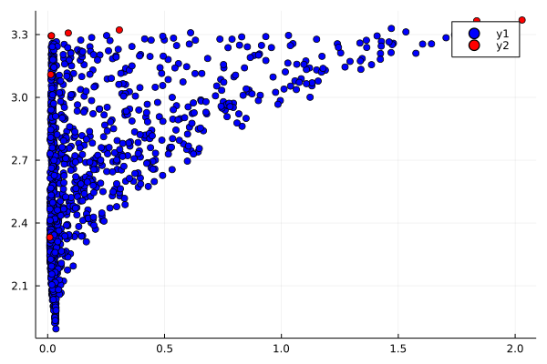
julia> αs = [82.45,50,30,20,15,12,10,9,8,7,6,5]12-element Vector{Float64}: 82.45 50.0 30.0 20.0 15.0 12.0 10.0 9.0 8.0 7.0 6.0 5.0julia> pOptScores = Array{Float64,2}(undef,0,2)0×2 Matrix{Float64}julia> for α in αs global pOptScores pVar,pY =computeOptimalPortfolio(species,y,σ,α) pOptScores = vcat(pOptScores,[pVar pY]) endjulia> scatter(pOptScores[:,1],pOptScores[:,2],colour=:red)Plot{Plots.GRBackend() n=1}
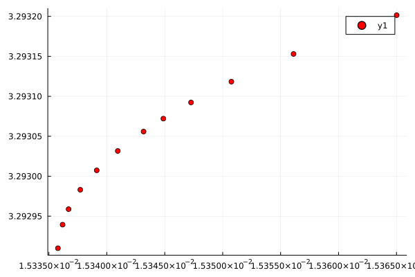
This page was generated using Literate.jl.